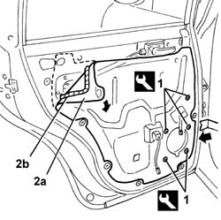
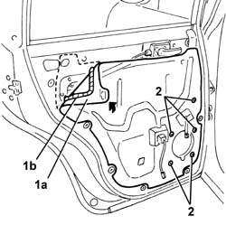

7010A04 rear side door water guard protection - r r or arrange with door panel removed
- Path
- Procedures > 70 FITTINGS > 7010 PASSENGER COMPARTMENT REAR SIDE DOORS > 7010A rear side door assembly > 7010A04 rear side door water guard protection - r r or arrange with door panel removed
- Kind
- repair procedure (removal / refitting; the operation number is the code)
- Applies to
- all engines; all production periods
- Interactive page
- https://sloeber94.github.io/elrnDB-a147/en/#/3025692
Applies to: all engines; all production periods
 Removing
Removing
 Refitting
Refitting5570T96 rear side speaker - r r
1. Disengage the retainers using the special tool.
 | Name | Country |
|---|---|---|
1 | Scraper blade | 1.823.015.000 |
2. Remove the protective water shield (2a) by detacting the adhesive strip (2b).

Applies to: all engines; all production periods
Refitting
RemovingCheck that the new seal is intact and not torn.
1. Fit the new seal (1a).
2. Engage the retainers.

Applies to: all engines; all production periods
Topics linked from this page (1)
Topics that link to this page (14)
- 5505B21 rear door wiring - r r
- 7010A05 rear side door water guard protection-r r or arrange
- 7010A28 rear side door opening limiter-r r
- 7010C51 rear side door inner catch return device - r+r for repair or replacement
- 7010C64 handle link yo lock - r r
- 7010C65 handle link to lock - r r
- 7010D22 rear side door descending window glass guide (one) - r r with door panel (and support frame) removed
- 7010D23 rear side door descending window glass guide one-r r
- 7010E93 partition on rear door, lh or rh - r r with door panel removed
- 7010M20 repeair side door electrically operated window motor - r r with door panel-mount frame removed
- 7010M21 rear side door electrically-operated window-r r
- 7010N20 rear side door lock motor/catch assembly - r r with door panel and support frame removed
- 7010N21 rear side door lock motor-lock assembly r r
- 7205E38 Stripping REAR SIDE DOOR